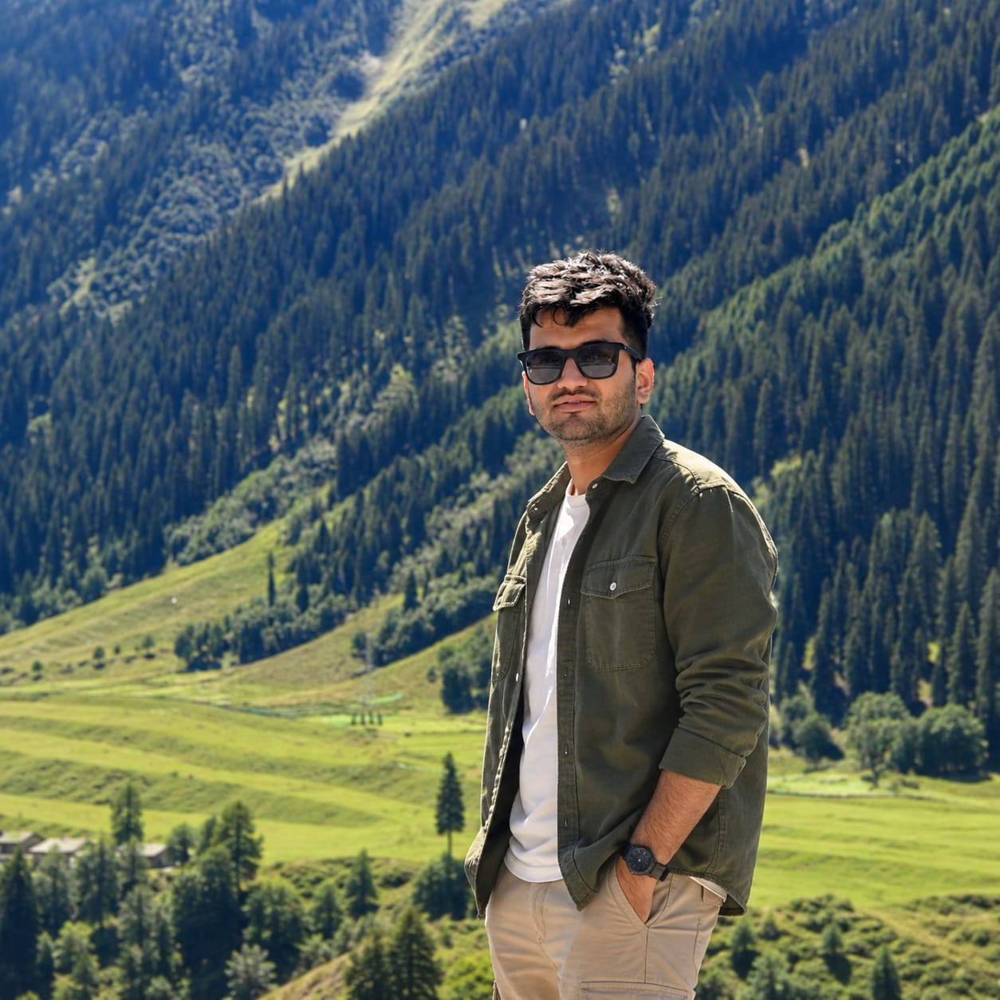

Understanding
Landscapes
Through Geography.
PhD researcher in Geography exploring geomorphic processes, spatial systems and sustainable approaches to land and water resource management.

Studying the relationship between land, water & landscape.
I am a PhD researcher in Geography with a specialization in geomorphology and sustainable natural resource management.
My work combines field observations, GIS, remote sensing, DEM analysis and spatial techniques to investigate landscape processes and environmental systems.
From landscape processes to sustainable resource management.
Research • Spatial Analysis • Environmental Geography
Research Focus
Geomorphic Assessment for Sustainable Land and Water Resources Management of Northeast Aravalli Hills of Rajasthan
The research investigates geomorphic characteristics, land resources and water resources of the Northeast Aravalli Hills, with the broader objective of supporting sustainable environmental management and spatial planning.
Rajasthan • IndiaAreas of Interest
My academic interests sit at the intersection of physical geography, geospatial technology and natural resource management.
Geomorphology
Understanding landforms, geomorphic processes, drainage systems and landscape evolution.
GIS & Remote Sensing
Spatial analysis, satellite imagery, DEMs and geospatial techniques for environmental assessment.
Water Resources
Hydro-geomorphic analysis and sustainable management of water resources.
Land Resources
Assessment of land characteristics and their relationship with sustainable resource use.
Spatial Analysis
Quantitative analysis of geographic patterns, terrain and environmental processes.
Sustainable Management
Linking geographic knowledge with sustainable environmental planning and management.
How I Study Landscapes
Let's connect.
For academic collaboration, research discussions, professional opportunities and related enquiries.
sksoni01@outlook.com